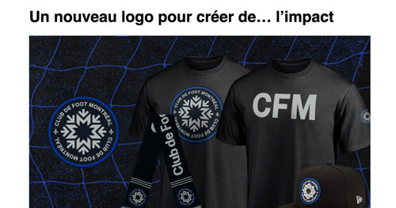

Pour cet exercice, vous devrez aider l’équipe marketing de La Presse à améliorer le référencement d’un article à propos du Club de Foot Montréal ⚽️. Votre rôle sera d’implémenter des microdonnées à l’article afin de l’aider à sortir avant ceux de la compétition sur les moteurs de recherche.
Aperçu du résultat 👇

Matériel
Pen de départ
Seules les microdonnées devront être ajoutées dans le HTML. Nul besoin d’écrire du CSS ou JavaScript. Attention de ne pas altérer l’apparence de la page en effectuant vos modifications.
Afin de partir sur le bon pied, basez-vous sur la page traitant des articles de Schema.org.
Requis
Points à faire ressortir via les microdonnées:
Catégorie de l'article articleSection | Soccer
Sujet de l'article about | Club de Foot Montréal
Nom de l'article name | Marketing-publicité Club de Foot Montréal
Gros titre headline | Un nouveau logo pour créer de… l’impact
Image de l'article image | couverture.jpg
Date de publication datePublished | 15 janvier 2021
Auteur author | Frédérick Duchesneau
Image de l'auteur image | fd.jpg
Prénom de l'auteur givenName | Frédérick
Nom de famille de l'auteur familyName | Duchesneau
Emplois de l'auteur jobTitle | Journaliste
Éditeur publisher | La Presse
Nombre de mots dans l'article wordCount | 147
Corp de l'article articleBody | L’Impact se nomme désormais…
Bonus
Tentez d'incorporer une microdonnées supplémentaire de votre choix listée dans la page d'article de Schema.org.
Validation
Utilisez l'outil de résultats enrichis de Google afin de valider votre implémentation et apporter les ajustements nécessaires.
Notes de cours 📚